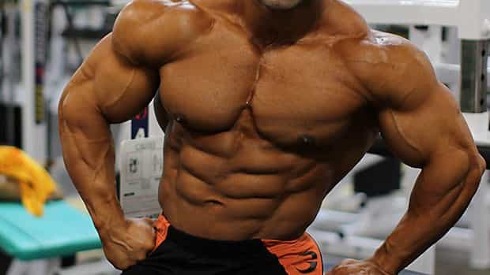
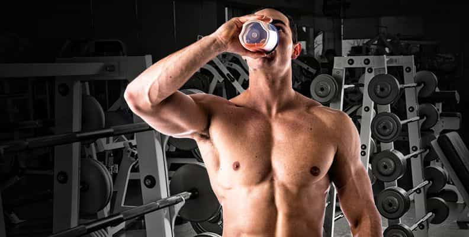

< < < Back
4 Steps To Getting A Shredded Summer Physique – Return Of Kings
It’s no secret that Western women have been raising their expectations of men for the past several decades. Dozens of Disney movies portraying men as princes, reality TV shows with men groveling at the feet of a “potential bride,” and general access to large quantities of men via Tinder and other dating applications, have made many women very picky.
One of the easiest ways for you to differentiate yourself, is to build a shredded, chiseled physique. Will it take some work? Yes, it will. But is it worth it? Absolutely.
Learning game, and getting girl’s numbers when you’re shredded, is like shooting fish in a barrel…especially if you’re over the age of 35. Even if you’re younger, however, most men are weak and scrawny, or largely overweight. Getting a head start on your summer body is a great way to ensure that you’ll stand out, and be able to game scantily-clad beach girls with ease.
1. Use 16-8 The Model of Intermittent Fasting
Whenever I have clients that are overweight and trying to cut down some pounds, I always recommend that they do intermittent fasting, for several reasons. First, however, what is intermittent fasting?
Intermittent fasting is the idea that you only eat during a certain time frame. There’s various versions of it, some advocate fasting for 8 hours a day, and others advocate only having one meal a day. Personally, I recommend that you use the 16-8 model.
What this means is that you wake up, and fast for the next 8 hours. So, if you wake up at 6AM, you don’t eat until 2PM, and you finish eating at or before 10PM. This is beneficial for numerous reasons:
- You’ll be able to focus on work for many uninterrupted hours
- It’s easy to diet, seeing you’ll have to fit your calories into a smaller window
- Intermittent fasting improves hormonal profile, boosting testosterone and growth hormone
You will be absolutely amazed at how fast you burn fat when you utilize intermittent fasting—losing 30 pounds a month isn’t unheard of, and in fact, some people that I’ve put on this diet (in conjunction with ketosis) have lost 45 pounds in just a month.
2. Utilize P.H.A.T. Training

I’ve discussed this before on Return of Kings, but it’s worth mentioning again, because it’s the best workout structure I’m currently aware of. P.H.A.T. training stands for Power Hypertrophy Adaptive Training, or in other words, combining strength and mass training into one routine.
My current routine, and the routine I recommend if you’re trying to look phenomenal for summer, follows this layout:
- Day 1: Upper Body Strength
- Day 2: Lower Body Strength
- Day 3: Rest
- Day 4: Back and Shoulders Mass
- Day 5: Legs Mass
- Day 6: Chest and Arms Mass
- Day 7: Rest
This routine is definitely on the more advanced side, but with adequate focus and recovery, any man with normal levels of testosterone can benefit tremendously from it. Days 1 and 2 should be focused on the big compound lifts: bench press, squat, deadlift, overhead press, and the barbell row. This will allow you to shatter any and all previous strength plateaus.
Days 4-6 should be focused on hypertrophy, or in layman’s terms, building mass. This equates to higher repetitions with lower weight. Do plenty of auxiliary exercises to train each specific muscle. I generally aim for 3-4 different exercises for each muscle group.
So, for example, on Day 6, I do 3 variations of chest exercises, 3 variations of bicep exercises, and 3 variations of tricep exercises, all ranging from 8-20 repetitions. This ensures that I not only get a chiseled, shredded physique, but also put on mass and build endurance.
3. Do Weighted and Non-Weighted Ab Exercises

One of the biggest mistakes I see guys making when they’re trying to get a six pack, is they only focus on doing non-weighted ab exercises. You know, the typical ones you learn in gym class, like sit ups, planks, and leg raises?
Those are great and all, but if you want to build those deep, thick ab muscles that really pop, you’ll have to add some weight into your routine. Opt for weighted sit ups on a decline bench press—start out with 25 pounds, then do as many as you can. Drop down to 10, then 5, and finish it off with as many repetitions as you can do with no weight.
Another phenomenal exercise, that is a part of my personal routine, is the rope crunch. You know that rope that people attach onto the cable machine, and usually use to hit their triceps? Well, you can also use it to hit your abs. What you do is you get down on your knees, facing away from the rope.
Then, pull it down so that it’s touching your neck. Slowly move your head down until it touches the ground—you should feel an incredible burn in your abs, because if you’re doing it right, they’ll be doing 90% of the work. Aim to start off with heavier weight, and slowly decrease the weight until you can’t do anymore repetitions.
4. Utilize No-Bullshit Supplements

As someone who worked at a supplement store in college, I’m very aware that 90% of supplements are total garbage. They promise you ridiculous gains, like 30 pounds of rock solid muscle in a week “for the low, low price of $89.99!”
Ignore 90% of supplements, and stick to the basics:
- A high-quality pre-workout, with key ingredients
- A good whey protein powder
- Creatine monohydrate
- Bodybuilder’s multivitamin
If you want to get fancy there’s plenty of supplements that you can use beyond these, but in terms of being “natural,” (AKA avoiding legal steroids), and bang for your buck, these are the best ones to go with. I have test-tried literally hundreds of supplements before, and have compiled a list of the most meth-like pre-workouts.
I recommend you take one of these 15-20 minutes before hitting the gym, because there’s scientific evidence proving their effectiveness. When choosing a pre-workout, aim for caffeine, beta-alanine, vinpocetine, and l-taurine. There’s plenty more ingredients that will improve your workout, but these are some key ones.
As for the whey protein, Optimum Nutrition’s Gold Standard is the best fundamental whey protein. Take 2 scoops post-workout with some dried mangoes, dried pineapple rings, and/or rice cakes. These contain fast-digesting carbohydrates that will jump start the muscle-growth process.
Take 3-5 grams of creatine with your pre-workout (if it doesn’t already have creatine in it), and 3-5 grams afterwards. On off days, aim to take 5 grams with a carbohydrate heavy meal. Just this alone will drastically improve your strength and endurance, because it enhances ATP synthesis (your body’s energy mechanism).
As for a bodybuilder’s multivitamin, I recommend Animal Pak—yes, it’s got a ton of pills in it, but that’s because it’s jam-packed with so many high quality ingredients. You’ll notice an increase in your energy within a few days, and it’ll provide you with all of the nutrients you need to build rock-solid muscle and melt away pounds of fat.
Summary

Imagine these girls complementing your abs
As the men of ROK are very aware, learning game is becoming increasingly difficult. Yes, having a strong frame is important, and yes learning to develop confidence is key, but it’s also important to look your best. If you want to pull the hottest of the hot, you MUST actively work on your physique.
Gone are the days where a man could get a sexy wife from merely being a “good guy,” with a good job. Unfortunately, you need more than that now…but don’t worry, because getting a chiseled physique is far easier than you’d think. Simply utilize my advice, and you’re good to go.
Do intermittent fasting, preferably the 16-8 model. Design your routine based around the P.H.A.T. principle, in order to build lean, dense, strong muscle, and get huge at the same time. Do weighted and non-weighted ab exercises, to get those deep ab grooves that turn women on.
And for the love of God, ignore that GNC salesman. Stick to creatine, pre-workouts, whey protein, and a multivitamin, and you’ll be pulling beach chicks in no time.
Want the definitive guide to building a shredded, sexy physique that drives women crazy? Check out Jon’s “Body of an Alpha“ blueprint.
Read More: 3 Critical Rules To Build A Physique That Turns On Women